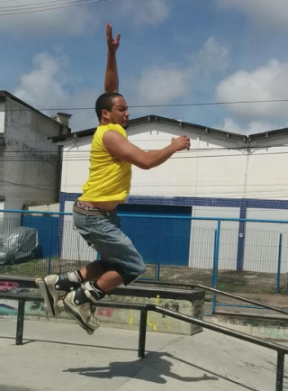

José Carlos (Professor)
Sou José Carlos Barbosa Pereira Filho, mas os amigos me chamam de Touca. Nascido em Santos - SP, mas logo cedo me tornei cidadão Pernambucano e torcedor do Sport. Sempre tive interesse por tecnologia por isso fiz o Bacharel Engenharia Mecatrônica, Tecnólogo em Análise de Sistema, Pos em robótica educacional e Pos em realidade virtual, aumentada e metaverso e estou concluindo o Bacharel em Teologia. Gosto de praticar esportes entre